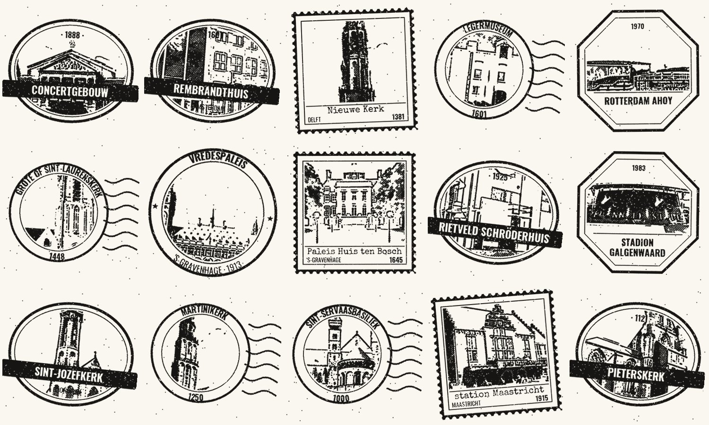

Мобильная версия LAYRS: вся Голландия вместо одного города. Карта показывает, когда построен каждый дом. Линзы добавляют исторический контекст. Прогулки и загадки работают прямо на улице.
Шкала периодов из стенда. Это фирменный элемент приложения: та же шкала в легенде, на линейке времени и в цвете заголовка карточки.
Карты в макетах настоящие: рендеры стенда на 375×812 из собранных тайлов. Интерфейс поверх них нарисован, данные Делфта посчитаны из BAG. Листайте вбок.
Старейшая приходская церковь Делфта. Наклон башни заметен с канала Oude Delft.
Он ближе 150 метров. Подсказка: ищите фасад старше соседей.
Размеры пакетов посчитаны только для зданий, без подложки и историй. Сохранённое и счёт загадки здесь для примера.
Четыре вкладки. Карта главная и занимает весь экран. Остальное открывается из шторки или из поиска.
Как экраны связаны между собой. Сплошные стрелки — переходы по нажатию, пунктир — то, что происходит само, по зуму или геопозиции.
flowchart LR
subgraph TABS[Вкладки]
MAP[Карта]
WALKS[Маршруты]
MINE[Мои]
SEARCH[Поиск]
end
MAP -. зум меньше 9 .-> COUNTRY[Карта: страна]
MAP -. центр в муниципалитете .-> CITY[Карта: город]
COUNTRY -->|чип города| CITY
CITY -->|тап по зданию| BLD[Шторка: здание]
CITY -->|Линзы · N| LENSES[Шторка: линзы]
LENSES -->|выбор линзы| LENS[Линза: легенда, текст, истории]
LENS -->|Показать на карте| CITY
LENS -->|история| CITY
CITY -->|тап по метке печати| STAMP[Шторка: печать]
CITY -. ближе 60 м .-> NEAR[Плашка: Вы у …]
NEAR --> STAMP
STAMP -->|Поставить печать| JOURNAL[Дневник печатей]
WALKS -->|Построить| ROUTE[Маршрут: остановки]
ROUTE -->|Показать на карте| CITY
CITY -->|Начать| GUIDE[Ведение по остановкам]
GUIDE -. остановка ближе 25 м .-> GUIDE
GUIDE -->|О здании| BLD
MINE --> JOURNAL
JOURNAL -->|печать| STAMP
MINE -->|сохранённое здание| BLD
MINE -->|сохранённая прогулка| CITY
SEARCH -->|адрес, город, история| CITY
BLD -->|Реестр RCE, BAG viewer| EXT[(Внешние сайты)]
ROUTE -->|Google Maps| EXT
STAMP -->|Википедия| EXT
MVP первый выпуск, 1.1 и 2 позже. В колонке «Где» указано, где требование уже работает: стенд — веб-страница на GitHub Pages, приложение — Expo, проверено в веб-сборке. Нативная сборка ещё не проверена: для неё нужен Xcode.
| ID | Требование | Этап | Где |
|---|---|---|---|
| A1 | Страна на зумах 5–10: растр, где каждый пиксель окрашен по медианному году зданий под ним. При отдалении детали мельчают, крупных квадратов нет. | MVP | стенд, приложение |
| A2 | Сетка 100 м на зумах 10–12,5, медианный год и плотность застройки в каждой клетке. | MVP | стенд, приложение |
| A3 | Здания в 3D с высотой из 3D BAG: с зума 12,5 в приложении, на стенде — когда в кадре 10 000 клеток или меньше. На 12–13 упрощённые тайлы, с 14 полные. | MVP | стенд, приложение |
| A4 | Режимы «Периоды» (10 периодов) и «Памятники» (рийксмонументы золотым). | MVP | стенд, приложение |
| A5 | Линейка года одним пальцем: город таким, каким он был в выбранный год. | MVP | стенд, приложение |
| A6 | Приблизительные годы (округлённые в BAG, оценки, датировки RCE веком) бледнее, в карточке «около». | MVP | стенд, приложение |
| A7 | Подложка из Top10NL: вода, зелень, дороги с названиями, ж/д, названия мест. Соседние страны серым, граница NL пунктиром. | MVP | стенд, приложение |
| A8 | Строка «где я» и чипы городов: подсвечен муниципалитет в центре карты; муниципалитет без готового чипа добавляется первым. | MVP | стенд, приложение |
| A9 | Вид карты в ссылке (центр, зум, наклон, режим, год). | 1.1 | стенд |
| ID | Требование | Этап | Где |
|---|---|---|---|
| B1 | Шторка по тапу: год с пометкой точности, период, высота, номер BAG. | MVP | стенд, приложение |
| B2 | Рийксмонумент: номер и ссылка на реестр RCE; ссылка на BAG viewer. | MVP | стенд, приложение |
| B3 | Линзы, в которые входит здание, с группой, историей и источником. | MVP | стенд, приложение |
| B4 | «Сохранить» в «Мои». | MVP | приложение |
| B5 | Название и фото здания из Wikidata и Commons по всей стране; описание памятника из реестра RCE (CC BY). | 1.1 | — |
| ID | Требование | Этап | Где |
|---|---|---|---|
| C1 | Список линз города по разделам: 30 в Амстердаме, 17 в Делфте. | MVP | стенд, приложение |
| C2 | Одна активная линза: здания её групп в цветах групп, остальные серым. | MVP | стенд, приложение |
| C3 | Легенда, текст линзы, оговорка, источник, список зданий с историями; тап переносит к зданию. | MVP | стенд, приложение |
| C4 | Тексты линз на русском. | 1.1 | — |
| C5 | Линзы для других городов. | 2 | — |
| ID | Требование | Этап | Где |
|---|---|---|---|
| D1 | Доступ к геопозиции «при использовании», запрос по кнопке «Моё место» или «Начать». При отказе — объяснение, где включить. | MVP | стенд, приложение |
| D2 | Синяя точка с кругом точности; карта следует за вами до первого сдвига пальцем. | MVP | стенд, приложение |
| D3 | Прогулка за три вопроса: откуда, что смотреть, длина и форма (1–5 км, круг или в одну сторону). | MVP | стенд, приложение |
| D4 | Подбор остановок на телефоне без сервера, маршрут по улицам по пешеходному графу муниципалитета; длина не больше заказанной плюс 10%. | MVP | стенд, приложение |
| D5 | Ведение: стрелка и расстояние до следующей остановки, остановка засчитывается в радиусе 25 м; без геопозиции — кнопка «Дальше». | MVP | стенд, приложение |
| D6 | Экспорт в Google Maps (до 9 точек), ссылка на маршрут, сохранение в «Мои». | MVP | стенд, приложение |
| D7 | Остановки с историями линз как самые ценные. | 1.1 | — |
| ID | Требование | Этап | Где |
|---|---|---|---|
| E1 | В каждом муниципалитете 5–20 доминант разных эпох (по размеру города), не ближе 100 м друг к другу. | MVP | данные |
| E2 | Метки печатей города на карте: кольцо цвета эпохи, полученные залиты. | MVP | приложение |
| E3 | Ближе 60 м к непройденной печати при точности GPS до 50 м — плашка «Вы у … — поставить печать». | MVP | приложение |
| E4 | Шторка печати: оттиск, название, год и эпоха, расстояние; кнопка «Поставить печать» работает только в радиусе. | MVP | приложение |
| E5 | Оттиск с «ударом» и вибрацией; без анимации при «уменьшении движения». | MVP | приложение |
| E6 | Дневник в «Мои»: страница города с прогрессом N/M, полученные печати с наклоном и датой, остальные бледные. | MVP | приложение |
| E7 | Пять видов оттиска: штемпель, марка, овальная печать, восьмиугольник, гашение. Чёрная краска с фактурой: неровный нажим, пропуски, брызги. | MVP | данные, приложение |
| E8 | Автор и лицензия фото, по которому сделана зарисовка. | MVP | приложение |
| E9 | Постер дневника для печати: все печати страны или города на одном листе. | 2 | — |
| E10 | Защита от подделки геопозиции (проверка mock location на Android, разумная скорость перемещения). | 1.1 | — |
| ID | Требование | Этап | Где |
|---|---|---|---|
| F1 | Сохранённые здания и прогулки на устройстве, с удалением. | MVP | приложение |
| F2 | Офлайн-пакет муниципалитета: здания, подложка, остановки, граф, линзы, печати одним скачиванием. | 1.1 | — |
| F3 | Поиск: муниципалитеты, истории текущего города, любой адрес через геокодер PDOK. | MVP | приложение |
Всё из открытых источников, собирается пайплайном в репозитории и лежит в Cloudflare R2. Своего сервера нет.
| Что | Источник и лицензия | Объём |
|---|---|---|
| Здания, год, высота | 3D BAG (CC BY 4.0), BAG (CC0) | 10,7 млн зданий; тайлы 0,89 ГБ |
| Памятники и их даты | RCE: точки PDOK, linked data (CC BY) | 63 тыс. памятников, 55,9 тыс. зданий |
| Подложка | Kadaster BRT Top10NL (CC BY 4.0) | 264 МБ |
| Границы | PDOK BRK (CC BY 4.0), Natural Earth | 342 муниципалитета |
| Пешеходные графы | Top10NL, дороги кроме автомагистралей | 553 МБ на всю страну |
| Линзы и истории | сайты LAYRS Амстердам и Делфт (тексты со ссылками на Википедию) | 47 линз, 13 тыс. текстов |
| Печати | Wikidata (CC0), фото Wikimedia Commons (лицензия каждого фото) | 337 муниципалитетов, 3172 печати |
formSheet.@maplibre/maplibre-react-native 11; в веб-сборке maplibre-gl 5.6. Один стиль на обе платформы.flowchart LR SRC[(3D BAG, BAG, RCE, Top10NL, PDOK, Wikidata, Commons)] --> PIPE[pipeline/p00–p15, Python] SITES[(сайты LAYRS Амстердам и Делфт)] --> PIPE PIPE --> R2[(Cloudflare R2: layrs-nl/v1)] R2 -->|PMTiles по Range| MAPN[MapLibre Native] R2 -->|PMTiles по Range| MAPW[maplibre-gl] R2 -->|JSON: остановки, графы, линзы, печати| APP[Приложение Expo] MAPN --> APP MAPW --> WEB[Веб-сборка и стенд на GitHub Pages] APP --> KV[(Хранилище на телефоне: сохранённое, дневник)]
| Файл в R2 | Содержимое |
|---|---|
nl-buildings-{0,1,2}.pmtiles, nl-buildings-lo.pmtiles | здания z14–15 тремя частями по долготе и z12–13: id, год y, высота h, памятник m, точность года q |
nl-overview-r.pmtiles, nl-overview.pmtiles | обзор: растр z5–10 и сетка 100 м z10–13 |
nl-base.pmtiles, nl-context.pmtiles | подложка Top10NL; соседние страны и граница |
gemeenten.json | упрощённые границы 342 муниципалитетов |
poi/<GM>.json, graph/<GM>.json | кандидаты в остановки; пешеходный граф |
layers/<GM>.json | линзы: каталог, группы, истории, здания по группам |
stamps/<GM>.json, stamps/img/<qid>.png | печати муниципалитета и их оттиски |
Обе функции уже работают на стенде. Справа живой экран стенда: круговая прогулка на 5 км от центра Делфта, 15 остановок из рийксмонументов и старых домов.
Дневник путешественника, как постер, где отмечаешь места, где был. В каждом муниципалитете от 5 до 20 доминант разных эпох. Печать ставится только на месте: нужно подойти к зданию ближе чем на 60 м.

Смысл остаётся: здания по слоям времени, истории со ссылками на источники, игра. Меняются масштаб и сценарий: вся страна вместо одного города, телефон на улице вместо экрана за столом.
| На сайтах | В приложении |
|---|---|
| Один город, трёхмерная сцена на three.js | Вся страна на MapLibre. Глубина разная: базовые линзы есть везде, истории только в городах, где их собрали. |
| 30 слоёв по разделам, одна активная | Линзы. Национальные (периоды, памятники, высота) и городские. В списке только линзы этого места. |
| Гистограмма-таймлайн с двумя ручками | Линейка времени одним пальцем. «Город в году X» и рост города по кнопке. Ручка «с» убрана: на телефоне она мешает больше, чем помогает. |
| Карточка из 9 секций, всплывает при наведении | Шторка здания в три высоты. Наведения нет, только тап. Короткое сверху, источники внизу. |
| Квесты: клик по домам в 3D | Загадки на месте по геопозиции, плюс режим «с дивана» с теми же шагами. |
| Прогулки с выгрузкой в Google Maps и KML | Маршрут прямо в приложении, работает офлайн. Ссылку на маршрут оставляем. |
| Граф людей и мест (d3) | «Связи» внутри карточек. Отдельного графа нет: на шести дюймах он нечитаем. |
| Ссылки ?b=, ?layer=, ?walk= | Универсальные ссылки: открывают приложение, а без него сайт. |
По каждому три варианта. Рамкой отмечен тот, к которому склоняюсь я.
Карта, Маршруты, Мои, Поиск. Прогулки и офлайн находятся с первого взгляда.
Минус: вкладки съедают 50 точек высоты у карты.
Как в Apple Maps: максимум карты, всё вызывается из шторки.
Минус: маршруты и скачанные города спрятаны на два тапа глубже.
Отдельная вкладка-компас для прогулки по городу.
Минус: дома, на диване, вкладка пустая.
Везде периоды, памятники и высота. Истории только в Амстердаме и Делфте, где они уже собраны.
Минус: в большинстве городов карточка короткая.
К запуску полные линзы в пяти городах, остальная страна просто карта.
Минус: месяцы ручной работы до запуска.
Базовые линзы везде, истории там, где больше поисков и скачиваний.
Минус: сначала нужны пользователи, чтобы появился спрос.
«Город в году X», кнопка проигрывает рост. Удобно одной рукой.
Минус: нельзя выделить одну эпоху отдельно от предыдущих.
Как на сайтах: диапазон «с» и «по».
Минус: мелкие ручки, промахи пальцем.
Десять периодов как переключатель, тап включает одну эпоху.
Минус: теряется ощущение непрерывного времени.